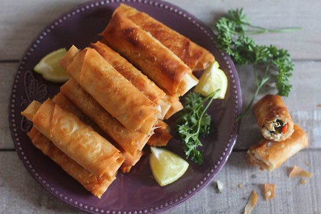

Home
Bourak

Description
Bourak, a savory pastry dish popular in North African and Middle Eastern cuisines—especially in Algeria—is typically prepared with thin pastry sheets known as dioul or warka, similar to phyllo dough. The most common filling includes a seasoned mixture of ground beef or lamb, finely chopped onions, garlic, parsley, and sometimes mashed potatoes or beaten egg to bind the mixture. The spices vary by region and personal taste but often include black pepper, paprika, and cumin. This filling is spooned onto the pastry sheets, which are then rolled or folded into cylindrical or triangular shapes.
Once shaped, the bourak is traditionally deep-fried until golden and crispy, though oven-baked versions are also popular for a lighter option. The result is a crunchy outer shell with a flavorful, juicy interior. Bourak is often served as a starter during Ramadan, alongside a bowl of chorba (a light soup), or as a tasty snack throughout the year. Its crisp texture and warm, spiced filling make it a comforting and crowd-pleasing dish.
Ingredients
- 250g ground beef or lamb
- 1 medium onion, finely chopped
- 2 cloves garlic, minced
- 1 tablespoon chopped fresh parsley
- 1 small potato, boiled and mashed
- 1 egg
- Salt
- Black pepper
- 1/2 teaspoon paprika
- 1/2 teaspoon ground cumin
- 6-8 sheets of dioul or phyllo
- Oil
- 1 egg yolk
Steps
- Heat a little oil in a pan and sauté the chopped onion until soft.
- Add minced garlic and cook for another minute.
- Add the ground beef or lamb and cook until browned, breaking it apart as it cooks.
- Season with salt, pepper, paprika, and cumin, then stir in chopped parsley.
- Add mashed potato and mix well, then remove the filling from heat and let it cool.
- Beat in one egg to bind the mixture once it has cooled slightly.
- Take a sheet of dioul or phyllo pastry and place a spoonful of filling near one edge.
- Fold and roll the sheet into a cigar or triangle shape, tucking the sides.
- Seal the edge with a little egg yolk or water.
- Heat oil in a frying pan over medium heat.
- Fry the bourak in batches until golden brown and crispy.
- Remove from the pan and drain on paper towels.
- Serve hot, with lemon wedges or alongside soup if desired.